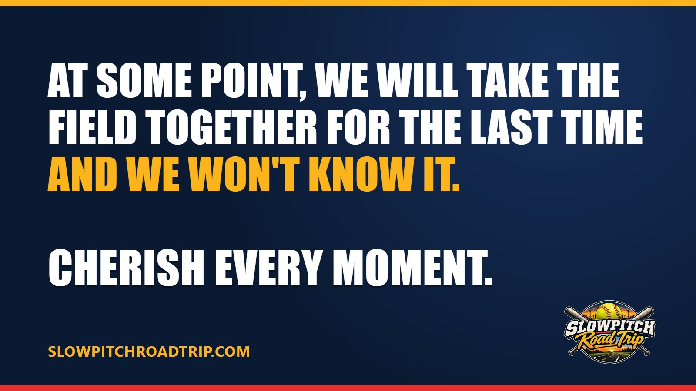

Why We Keep Playing: The Love of Senior Slowpitch Softball

At some point, somebody is going to ask you why you're still playing softball.
Maybe it's your wife wondering why you're leaving at 6 in the morning for a weekend tournament. Maybe it's your kids wondering why you're still swinging a bat at your age. Or maybe it's someone watching you limp around the parking lot after a long weekend and asking if all that is really worth it.
For me, the answer is still yes.
I've played slowpitch softball for 42 years, including the last seven in senior ball. I've had a lot of good times along the way, and I can tell you there's more than one reason we keep coming back.
We Still Love to Compete
Let's get something straight. Just because we're playing senior softball doesn't mean we've stopped wanting to win.
We might not run as fast as we used to. We might need a little longer to get loose before the first game. And getting out of bed the morning after a tournament can sometimes be an adventure all by itself.
But when the game starts, we're still competitors.
I remember winning the Tournament of Champions in Florida. In the winner's bracket game, we were down to our last chance in the bottom of the seventh, with two outs. We scored nine runs to come back and win 30–29.
Nine runs with two outs, when one more out would have ended it.
That's the kind of game you don't forget.
And we weren't finished. We went on to win the final against a very good team from Canada and take the championship.
Those are the moments that keep you coming back. The excitement, the pressure, the teammates pulling together, and the feeling when everything comes together.
The years change what our bodies can do. They don't change how much we want to win.
It's About the People
Ask a senior softball player about his or her favorite part of the game, and eventually the conversation will get around to the people.
The teammates. The friends on opposing teams. The familiar faces you see at tournaments throughout the season.
One of the things I've enjoyed most about my seven years in senior ball is meeting so many new people. You start recognizing faces at tournaments, and before long you're looking forward to seeing them at the next event.
I knew I would meet people. I didn't realize how many would become lifelong friends.
And then there's the dugout.
Some of the best entertainment at a softball tournament doesn't happen on the field. It happens on the bench, between innings, when somebody tells a story, somebody else adds a detail, and before long everybody is laughing.
Of course, there are also the arguments about the last play, the questionable umpire call, and the teammate who is absolutely convinced he would have caught that ball if somebody hadn't been standing in his way.
That's part of it, too.
The friendships are why a tournament weekend means more than whatever happens between the lines.
The Road Trips Are Part of the Fun
There's something about loading up the vehicle and heading out for a softball weekend.
Sometimes it's a short drive. Sometimes it's several hours. Either way, there's excitement about getting somewhere new, seeing familiar faces, and spending a weekend doing something you enjoy.
There are hotels, restaurants, early mornings, late nights, and plenty of conversations about the upcoming games.
You might spend the weekend playing in a tournament, but the memories aren't limited to the ballpark.
It's the dinner after the games. The conversations with friends you haven't seen in a few weeks or months. The teammates who somehow manage to get everybody laughing when the weekend isn't going quite as planned.
And sometimes the best part of a road trip is simply getting together with people you enjoy being around.
That's one of the reasons the travel is worth it. The tournament gives us somewhere to go, but the people make us want to return.
It Gives Us a Reason to Stay Active
Let's be honest. Staying active doesn't always get easier as the years go by.
There are aches, pains, old injuries, and occasionally something new that wasn't hurting yesterday.
But having softball on the calendar gives us a reason to keep moving.
We have games to prepare for, tournaments to attend, and teammates counting on us.
That can be a pretty powerful motivator.
Some players work out regularly. Others spend time practicing their swing, improving their mobility, or trying to get a little quicker on their feet.
We're all different, and we all have to figure out what works for our bodies.
The important thing is having something that encourages us to keep trying.
Softball gives us a goal beyond simply getting through another week.
We Still Have Something to Prove
Maybe we don't talk about it much, but I think a lot of us still want to prove something.
Not necessarily to anybody else. Sometimes it's just to ourselves.
We want to know we can still do it. We want to see that the years haven't taken away everything we've worked to develop over a lifetime of playing.
Maybe it's making a defensive play that reminds us of our younger days. Maybe it's getting around on a pitch we weren't sure we could hit anymore. Or maybe it's simply knowing we can still contribute to a good team.
Those moments matter.
There's a satisfaction in knowing you can still compete, still improve, and still surprise yourself every now and then.
We don't have to be the player we were at 25. We just want to be the best player we can be today.
And let's face it, a little friendly bragging in the dugout never hurt anybody.
Every Season Means a Little More
When you're younger, it's easy to assume there will always be another season.
You finish one tournament and start looking forward to the next. You make plans for next year without giving it much thought.
As we get older, we understand that things can change.
An injury can keep somebody off the field. A teammate might decide it's time to step away. Life sometimes gets in the way of the plans we make.
That doesn't mean we should spend every weekend worrying about what comes next.
It means we should appreciate the opportunities we have.
Enjoy the tournament. Appreciate your teammates. Take the road trip. Laugh in the dugout. And when you make a great play, enjoy it.
Because those ordinary softball weekends can turn into some pretty special memories.
It's More Than a Game
After 42 years, I still love playing slowpitch softball.
I love the competition. I love the friendships I've made, especially the new ones that have come with playing senior ball. I love the tournaments and the road trips.
But most of all, I love that I still have a reason to get out there and play.
We know we're not going to play forever.
We understand that our bodies aren't going to cooperate every single weekend. But that doesn't mean we're ready to walk away.
As long as there's a field to play on, teammates waiting in the dugout, friends to catch up with, and a game to be played, there's a pretty good chance we'll be there.
And if you see us limping a little Monday morning, don't worry.
We'll probably be back next weekend.
See you on the road.
Bill Mineweaser